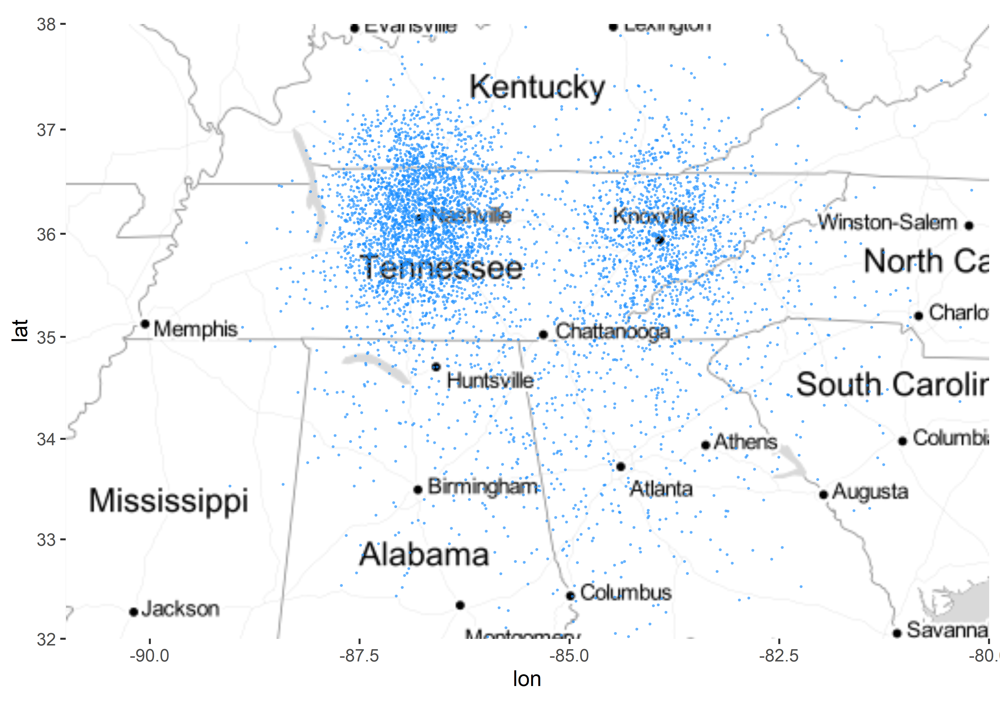
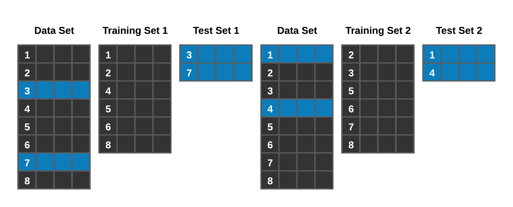
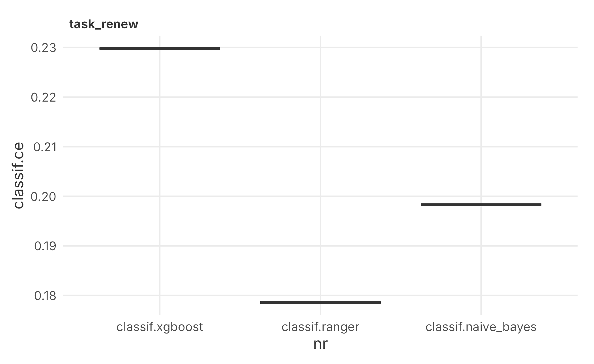
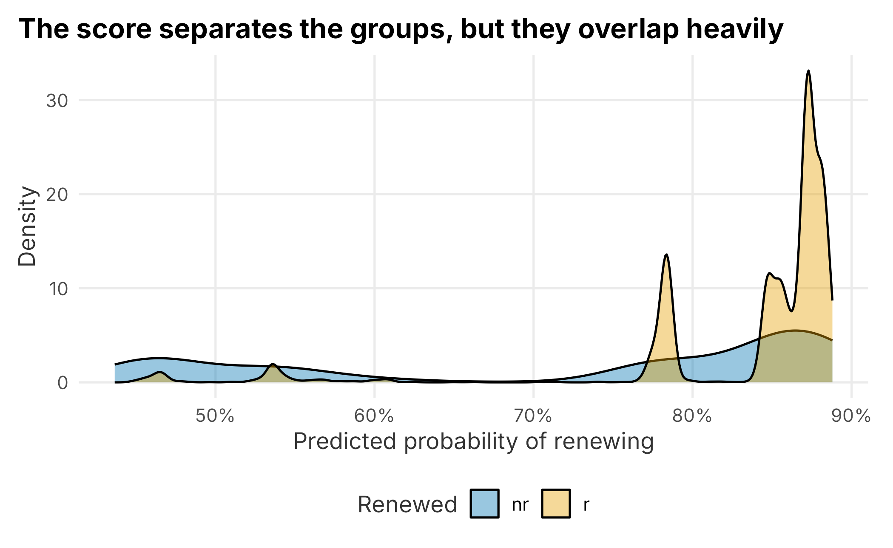
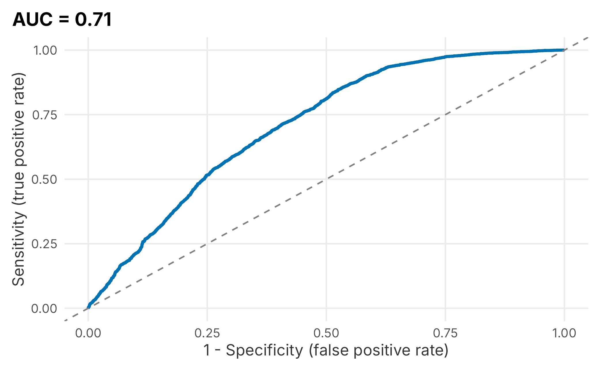
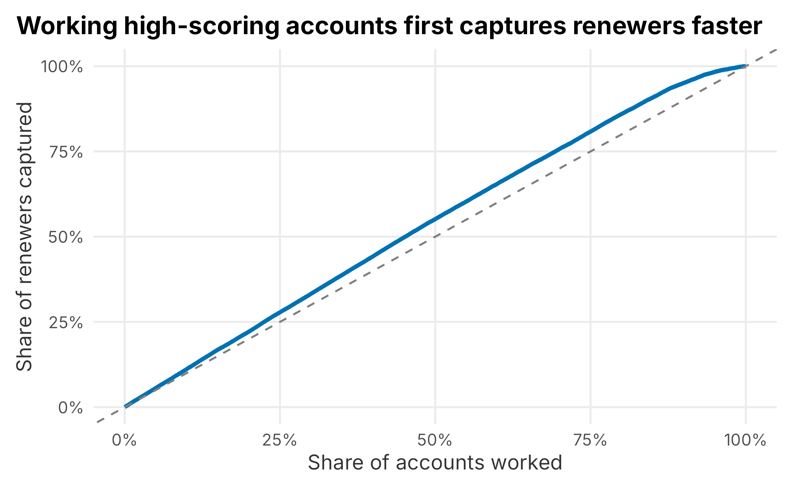

7 Lead scoring
Suppose I offered you $50,000 to sell four season tickets to someone in the next twenty-four hours. What would you do? The first thing I would ask is what the tickets cost — if it is less than $50,000, I could just buy them myself and pocket the difference. Short of that, how would you raise the odds of selling four real tickets?
- Call a broker and ask them to buy.
- Look for lapsed purchasers.
- Look for abandoned carts on the website.
- Call season-ticket holders who have not yet renewed.
- Beg friends and family.
There are plenty of ways to pick the low-hanging fruit. You would almost never resort to dialing random phone numbers. The question is whether we can make that prioritization analytical instead of intuitive.
That is lead scoring. You can qualify leads many ways, but the goal is always the same: order your leads so your sales effort stays efficient. A warm lead — someone who has engaged with your brand — is worth more of a rep’s time than a cold one. Marketing has been wrestling with this for over a century:
“Half the money I spend on advertising is wasted; the trouble is I don’t know which half.”
— John Wanamaker
Lead scoring helps you spend the effective half. But what makes a lead valuable? Lifetime value? Likelihood to buy this cycle? Recency, frequency, and spend? It can also come down to how sales and marketing are compensated — pay is designed to drive behavior, and it is not always aligned with the organization’s goals. Keep that in mind.
7.1 Recency, frequency, and monetary value
RFM scoring is sometimes called the poor analyst’s technique. The idea is to score each customer on three dimensions — how recently they engaged, how often, and how much they spent — and to build campaign lists from the highest combined scores. Let’s fabricate a small data set to show the mechanics. We take the customer file and bolt on three behavioral fields.
set.seed(44)
rfm_data <- FOSBAAS::demographic_data |>
dplyr::select(custID, nameFull) |>
mutate(
last_interaction = abs(round(rnorm(n(), 50, 30))),
interactions_ytd = abs(round(rnorm(n(), 10, 5))),
lifetime_spend = abs(round(rnorm(n(), 10000, 7000)))
)| custID | nameFull | last_interaction | interactions_ytd | lifetime_spend |
|---|---|---|---|---|
| MBT9G0X70NTI | Philip Riddle | 70 | 7 | 11554 |
| QTR3JJJ5J6GJ | Evelyn Campos | 51 | 14 | 4480 |
| HOMV3XQW32LW | Sarah Valdez | 5 | 13 | 3986 |
| RJ7CCATUH4Q1 | Pamela Munoz | 46 | 11 | 9454 |
| 9GZT5Z5AOMKV | Ronald Ortiz | 14 | 11 | 11336 |
| S0Y0Y2454IU2 | Nicole Barry | 10 | 8 | 9259 |
RFM scores traditionally run from 1 to 5, with 5 the best. The cleanest way to cut a column into five equal groups is dplyr::ntile. Recency is the one twist: a smaller number of days since the last interaction is better, so we rank on its negative.
rfm_scored <- rfm_data |>
mutate(
recency_score = ntile(-last_interaction, 5),
frequency_score = ntile(interactions_ytd, 5),
monetary_score = ntile(lifetime_spend, 5),
RFM = paste0(recency_score, frequency_score, monetary_score)
)Each customer now carries an RFM code. To build a campaign for the very best prospects, pull the customers who land in the top group on all three dimensions.
top_prospects <- rfm_scored |>
dplyr::filter(RFM == "555") |>
dplyr::select(nameFull, recency_score, frequency_score, monetary_score, RFM)| nameFull | recency_score | frequency_score | monetary_score | RFM |
|---|---|---|---|---|
| Christopher Esparza | 5 | 5 | 5 | 555 |
| Ryan Livingston | 5 | 5 | 5 | 555 |
| Russell Church | 5 | 5 | 5 | 555 |
| Stephen Lawrence | 5 | 5 | 5 | 555 |
| Karen Waller | 5 | 5 | 5 | 555 |
| Elizabeth Clements | 5 | 5 | 5 | 555 |
RFM is useful for simple segmentation and lead scoring, and it is easy to explain. But we can do better. The rest of the chapter builds a more sophisticated model and, along the way, introduces a framework that makes regression and machine learning much more systematic.
7.2 Scoring season-ticket holders on their likelihood to renew
Lead scoring has become close to a commodity. Random forests, gradient boosting, logistic regression, even deep learning are all within easy reach, and cloud platforms keep making them faster and cheaper. We will frame the work around a question every club asks every year:
The ticket service manager wants to know which accounts are least likely to renew their season tickets.
We will use the mlr3 framework (Lang et al. 2022) to demonstrate a couple of algorithms. mlr3 plays a similar role to caret (Kuhn 2021) (since refactored into tidymodels (Kuhn and Wickham 2021), which we use in the next chapter). If you know Python, mlr3 will feel like scikit-learn. You can always call the underlying functions directly — the lack of a consistent interface is one of R’s real drawbacks — but a framework pays off. It makes the routine parts of modeling repeatable, especially benchmarking, and its documentation is excellent 28.
Frameworks do have costs: you have to learn them, their errors can be harder to debug, and they can run slower than the bare libraries. On balance, the consistency is worth it.
7.2.1 Implementing a lead-scoring project
A random forest handles a wide range of club problems well and can predict more than two classes. Logistic regression is the natural starting point for a binary outcome — renewed or not — and is highly interpretable. We will look at both. As always, most of the work is getting the data in order; the modeling is the fun, fast part.
We will follow the six-step process from Chapter 4, to show it is not managerial filler:
- Define a measurable goal
- Collect the data
- Model the data
- Evaluate the results
- Communicate the results
- Deploy the results
7.2.1.1 Define the goal
We have several seasons of renewal data and a problem statement:
We do not know how to identify season-ticket accounts that are unlikely to renew.
The output is a score that ranks accounts against each other. We will look for features that predict renewal — perhaps ticket usage or tenure. The deeper challenge is that predicting renewals for finance is one thing; changing renewals for sales is another. We need to think about which levers we can actually pull, and stay open to learning something we were not looking for.
7.2.1.2 Understand the data
The data is in the FOSBAAS package as customer_renewals (see Section 2.3). Each row is a season-ticket account in a given season.
library(FOSBAAS)
mod_data <- FOSBAAS::customer_renewals| variable | class | first_values |
|---|---|---|
| accountID | character | WD6TDY7C151R, X3SB8ADEML22 |
| corporate | character | i, c |
| season | numeric | 2021, 2021 |
| planType | character | p, f |
| ticketUsage | numeric | 0.728026975947432, 0.992104738159105 |
| tenure | numeric | 2, 19 |
| spend | numeric | 4908, 16410 |
| tickets | numeric | 6, 2 |
| distance | numeric | 61.6614648674555, 19.5341155295423 |
| renewed | character | nr, nr |
Before modeling, look at the outcome itself.
## # A tibble: 2 × 3
## renewed n share
## <chr> <int> <dbl>
## 1 nr 2564 0.187
## 2 r 11142 0.813This matters enormously. About 81% of accounts renew. That class imbalance shapes everything that follows: a model that blindly predicts “renew” for everyone would be 81% accurate while being useless for the actual task, which is finding the minority who leave. Keep that 81% baseline in mind — it is the number any model has to beat to be worth anything.
The data is already clean (we covered missing data in Chapter 5), so preparation is light. Different algorithms want different formats, so we build a second, all-numeric copy with the categorical fields dummy-coded.
d1 <- as.data.frame(psych::dummy.code(mod_data$corporate))
d2 <- as.data.frame(psych::dummy.code(mod_data$planType))
mod_data_numeric <- mod_data |>
dplyr::select(ticketUsage, tenure, spend, tickets, distance, renewed) |>
dplyr::bind_cols(d1, d2)
mod_data_numeric$renewed <- factor(mod_data_numeric$renewed)| ticketUsage | tenure | spend | tickets | distance | renewed | i | c | f | p |
|---|---|---|---|---|---|---|---|---|---|
| 0.7280270 | 2 | 4908 | 6 | 61.661465 | nr | 1 | 0 | 0 | 1 |
| 0.9921047 | 19 | 16410 | 2 | 19.534115 | nr | 0 | 1 | 1 | 0 |
| 0.9791836 | 5 | 7248 | 3 | 5.738407 | r | 0 | 1 | 0 | 1 |
| 0.8221204 | 23 | 6442 | 2 | 1.280233 | r | 1 | 0 | 1 | 0 |
| 0.9836147 | 5 | 19800 | 8 | 19.028667 | r | 0 | 1 | 0 | 1 |
| 0.9032806 | 3 | 6640 | 4 | 15.584057 | r | 1 | 0 | 1 | 0 |
7.2.1.3 A note on geography and maps
Before modeling, a quick detour. Geography matters a great deal in selling tickets, especially for a long season like baseball’s, and it deserves more space than we can give it. R is not the best GIS tool, but it can produce a usable map inside the same workflow. The map below was made with ggmap. Note that the basemap services have changed — the old Stamen tiles now route through Stadia Maps and require a free API key — so this chunk is shown but not run here.
library(ggmap)
demos <- FOSBAAS::demographic_data
demos <- demos[sample(nrow(demos), 5000), ]
bbox <- c(left = -91, bottom = 32, right = -80, top = 38)
basemap <- ggmap(get_stadiamap(bbox, zoom = 6, maptype = "stamen_toner_lite"))
basemap +
geom_point(
data = demos,
aes(x = longitude, y = latitude),
size = 0.2, alpha = 0.5, color = plot_palette[1]
)
Figure 7.1: Customer locations plotted on a basemap
These maps are not publication-grade, but they are quick and convey most of what a tool like ArcGIS would. R can also call Google’s APIs to geocode addresses and compute drive times. Now, back to modeling.
7.2.1.4 Model the data
We will use mlr3. Loading its packages also lets us quiet its progress logging so the output stays readable.
library(mlr3)
library(mlr3learners)
library(mlr3viz)
library(mlr3tuning)
library(paradox)
lgr::get_logger("mlr3")$set_threshold("warn")
lgr::get_logger("bbotk")$set_threshold("warn")mlr3 follows a consistent pattern. First, wrap the data in a task — here a classification task whose target is renewed and whose positive class is "r".
task_renew <- TaskClassif$new(
id = "task_renew",
backend = mod_data_numeric,
target = "renewed",
positive = "r"
)Next, choose a learner. We will fit a random forest from the ranger package (Wright et al. 2021), asking for probability output.
learner_rf <- lrn("classif.ranger",
predict_type = "prob",
mtry = 3,
num.trees = 500)Split the data into training and test sets.
set.seed(44)
train_ids <- sample(task_renew$nrow, 0.75 * task_renew$nrow)
test_ids <- setdiff(seq_len(task_renew$nrow), train_ids)Training is a single call.
learner_rf$train(task_renew, row_ids = train_ids)The fitted learner holds useful information.
learner_output <- tibble::tibble(
num_trees = learner_rf$model$num.trees,
mtry = learner_rf$model$mtry,
samples = learner_rf$model$num.samples,
oob_error = learner_rf$model$prediction.error
)| num_trees | mtry | samples | oob_error |
|---|---|---|---|
| 500 | 3 | 10279 | 0.139 |
Now predict on the held-out test set and look at the confusion matrix, which shows how often the model was right and wrong for each class.
prediction <- learner_rf$predict(task_renew, row_ids = test_ids)
prediction$confusion## truth
## response r nr
## r 2662 508
## nr 106 151
prediction$score(msr("classif.acc"))## classif.acc
## 0.8208345The accuracy looks respectable, but remember the baseline: 81% of accounts renew, so always guessing “renew” already scores about 0.81. Read down the confusion matrix instead. The model catches most renewers but misses a large share of the non-renewers — and the non-renewers are exactly who the service manager wants to find. This is the central trap of imbalanced classification: high accuracy can hide a model that is poor at the only job that matters. We will lean on classification error and the ROC curve, not accuracy alone, from here on.
7.2.1.4.1 Resampling
Our model was validated on a single train/test split. That can leave you more confident than you should be. Cross-validation re-runs the procedure on several overlapping splits and averages the error, which calibrates the estimate. Figure 7.2 shows the idea.

Figure 7.2: The resampling concept
Ten-fold cross-validation runs the fit ten times and averages the ten error estimates (Ian H. Witten 2011). mlr3 makes this easy.
resampling <- rsmp("cv")
resampling$instantiate(task_renew)
rr <- resample(task_renew, learner_rf, resampling, store_models = TRUE)
rr$aggregate(msr("classif.ce"))## classif.ce
## 0.1788993The cross-validated classification error is a more trustworthy number than the single-split version.
7.2.1.4.2 Tuning the model
Most algorithms have parameters that change their behavior — a random forest, for instance, can vary the number of trees and how deep they grow. How do you know you have set them well? You search. We pick a few ranger parameters and a range for each.
tune_space <- ps(
min.node.size = p_int(lower = 10, upper = 200),
max.depth = p_int(lower = 2, upper = 20),
num.trees = p_int(lower = 500, upper = 600)
)We need a resampling strategy, a measure, and a stopping rule. Cross-validation gave similar errors, so a holdout split is fine here; classification error is the measure; and we stop after ten evaluations.
tune_instance <- ti(
task = task_renew,
learner = learner_rf,
resampling = rsmp("holdout"),
measure = msr("classif.ce"),
search_space = tune_space,
terminator = trm("evals", n_evals = 10)
)A random search samples parameter combinations from those ranges.
## min.node.size max.depth num.trees learner_param_vals x_domain classif.ce
## <int> <int> <int> <list> <list> <num>
## 1: 44 3 543 <list[5]> <list[3]> 0.170278The best combination found was a minimum node size of 44 and a maximum depth of 3, with a classification error of:
tune_instance$result_y## classif.ce
## 0.170278We push the winning parameters back into the learner, refit, and predict again.
learner_rf$param_set$values <- tune_instance$result_learner_param_vals
learner_rf$train(task_renew)
prediction_tuned <- learner_rf$predict(task_renew, row_ids = test_ids)
prediction_tuned$confusion## truth
## response r nr
## r 2715 514
## nr 53 145
prediction_tuned$score(msr("classif.acc"))## classif.acc
## 0.8345492Tuning nudges the numbers, but look closely at the confusion matrix: most of the “improvement” comes from predicting the majority class even more often. Against an 81% baseline, that is a small, honest gain — a useful reminder that on imbalanced data the headline accuracy and the business value can move in different directions.
7.2.1.5 Comparing different models
Is a random forest the right choice? You only know by trying others. mlr3 makes a fair comparison straightforward through a benchmark: same data, same resampling, several learners. We pit gradient boosting (xgboost), the random forest (ranger), and naive Bayes against each other.
design <- benchmark_grid(
tasks = task_renew,
learners = list(
lrn("classif.xgboost", predict_type = "prob"),
lrn("classif.ranger", predict_type = "prob"),
lrn("classif.naive_bayes", predict_type = "prob")
),
resamplings = rsmp("holdout")
)
set.seed(44)
bmr <- benchmark(design)We compare them on AUC (area under the ROC curve — higher is better discrimination) and classification error (lower is better).
bmr$score(list(
msr("classif.auc", id = "auc"),
msr("classif.ce", id = "ce")
))[, c("learner_id", "auc", "ce")]## learner_id auc ce
## <char> <num> <num>
## 1: classif.xgboost 0.6426902 0.2298096
## 2: classif.ranger 0.6892485 0.1785949
## 3: classif.naive_bayes 0.6917434 0.1982928
Figure 7.3: Benchmark classification error by model
The three models land close together — close enough that the ranking can flip with a different split or seed. That near-tie is itself the lesson: do not fall in love with one algorithm. On this split the gradient-boosting model does not beat the simpler random forest, which is a common and humbling result. Try a few, compare honestly, and prefer the simpler, more interpretable model when the differences are small.
7.2.1.6 A logistic regression for comparison
Logistic regression “builds a linear model based on a transformed target variable” (Ian H. Witten 2011) — here the probability of renewing. It is interpretable and a sensible first model for a binary outcome, so it is worth fitting directly.
glm_mod <- glm(
renewed ~ ticketUsage + tenure + spend + distance,
data = mod_data_numeric,
family = binomial(link = "logit")
)
glm_summary <- tibble::tibble(
deviance = glm_mod$deviance,
null_deviance = glm_mod$null.deviance,
aic = glm_mod$aic,
pseudo_r2 = 1 - glm_mod$deviance / glm_mod$null.deviance
)| deviance | null_deviance | aic | pseudo_r2 |
|---|---|---|---|
| 11746.19 | 13211.17 | 11756.19 | 0.111 |
The output reads differently from ordinary regression. We will not cover logistic regression in depth, but it is worth knowing, and it generally performs well on two-outcome problems. Be careful with the pseudo R-squared — there are several definitions; pscl::pR2(glm_mod) (Zeileis et al. 2008) shows a few.
7.2.2 Measuring performance
Performance metrics can be technical and confusing. With a proper holdout or cross-validation, classification error plus a look at the confusion matrix is often enough. Two plots add intuition. We will score every account with the random forest’s probability of renewing and visualize how well those scores separate the two groups.
scores <- learner_rf$predict_newdata(mod_data_numeric)
mod_data_numeric$score_renew <- scores$prob[, "r"]A density plot shows whether renewers and non-renewers receive different scores.
ggplot(mod_data_numeric, aes(x = score_renew, fill = renewed)) +
geom_density(alpha = 0.4) +
scale_fill_manual("Renewed", values = plot_palette) +
scale_x_continuous(labels = scales::percent) +
labs(x = "Predicted probability of renewing", y = "Density",
title = "The score separates the groups, but they overlap heavily") +
book_theme
Figure 7.4: Renewal-score density by actual outcome
The two distributions shift apart — renewers score higher — but they overlap a lot, which is the visual version of the modest AUC we saw. An ROC curve summarizes that trade-off between catching true renewers (sensitivity) and false alarms (specificity) across every threshold.
library(pROC)
roc_obj <- roc(mod_data_numeric$renewed, mod_data_numeric$score_renew, quiet = TRUE)
ggroc(roc_obj, legacy.axes = TRUE, colour = plot_palette[1], linewidth = 1.2) +
geom_abline(slope = 1, intercept = 0, linetype = 2, color = "grey50") +
labs(x = "1 - Specificity (false positive rate)", y = "Sensitivity (true positive rate)",
title = paste0("AUC = ", round(as.numeric(roc_obj$auc), 3))) +
book_theme
Figure 7.5: ROC curve for the renewal model
The dashed diagonal is what random guessing would produce. Our curve sits above it — the model has real, if limited, lift.
7.3 Using the model
Lead scores are easy to use, and qualifying leads may be the highest-value analytics task you can deploy quickly. You apply the model to current accounts, sort by the score, and work the list in whatever order serves the goal. To find renewals, work from the top; to find churn risk — the manager’s actual question — work from the bottom, the accounts least likely to renew.
7.3.1 Cumulative gains charts
How much does the model actually help in practice? A cumulative gains chart answers that. Sort everyone by their score, then ask: if we work the top X% of the list, what share of all renewers have we reached? A model with no skill captures renewers at the same rate as the population — the diagonal. A useful model bows above it.
gains <- mod_data_numeric |>
dplyr::select(renewed, score_renew) |>
dplyr::arrange(desc(score_renew)) |>
dplyr::mutate(
renew_flag = as.integer(renewed == "r"),
population_pct = row_number() / n(),
captured_pct = cumsum(renew_flag) / sum(renew_flag)
)
ggplot(gains, aes(x = population_pct, y = captured_pct)) +
geom_line(color = plot_palette[1], linewidth = 1.2) +
geom_abline(slope = 1, intercept = 0, linetype = 2, color = "grey50") +
scale_x_continuous(labels = scales::percent) +
scale_y_continuous(labels = scales::percent) +
labs(x = "Share of accounts worked", y = "Share of renewers captured",
title = "Working high-scoring accounts first captures renewers faster") +
book_theme
Figure 7.6: Cumulative gains chart
The curve sits above the diagonal, so prioritizing high-scoring accounts does reach renewers faster than working the list at random — but the gap is modest, consistent with the model’s limited discrimination. The further the curve bows toward the top-left corner, the more your campaign benefits from the scoring. Where the curve flattens, additional outreach is buying you little, which is a natural place to stop a campaign.
7.4 Key concepts and chapter summary
Systematically prioritizing whom to contact is core to direct marketing. We covered:
- RFM scores
- Lead scoring with a random forest in
mlr3 - Cross-validation
- Model tuning
- Model comparison via benchmarking
- Evaluating a model with confusion matrices, ROC, and gains charts
- Putting the scores to work
A few lessons are worth keeping:
- RFM scoring is simple, interpretable, and a fine starting point — the “poor analyst’s analytics.”
- A random forest is a strong, interpretable default for the short-and-wide data clubs usually have, and it tends to perform about as well as logistic regression.
- Mind the base rate. With 81% of accounts renewing, accuracy is a misleading headline. Judge a model by how well it finds the minority you care about, using the confusion matrix, classification error, and AUC.
- Cross-validate and tune, but stay honest about how much they actually buy you.
- Compare several models. They often finish close together, and the ranking can change with the split — reason enough to prefer the simpler one.
- Deploying lead scores is easy and makes salespeople more effective, which is strategy at its most practical.
Chapter 8 turns to promotions — designing offers and, harder still, figuring out whether they actually caused the sales we attribute to them.